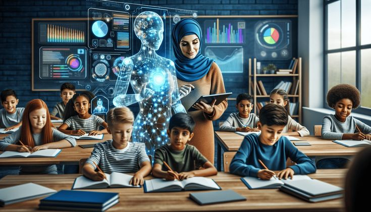

Artificial Intelligence telah menjadi pilar utama dalam perkembangan teknologi modern.
AI membantu dalam otomatisasi tugas-tugas kompleks, meningkatkan efisiensi bisnis,
dan memungkinkan inovasi di berbagai sektor.
Pada tahun 2025, AI telah berkembang ke tingkat yang lebih tinggi dengan integrasi yang
lebih baik di bidang pendidikan, kesehatan, dan keamanan siber.
Sejarah Singkat AI
AI pertama kali muncul sebagai konsep di tahun 1950-an ketika ilmuwan komputer seperti Alan Turing
mulai mengeksplorasi gagasan tentang mesin yang bisa berpikir. Sejak saat itu, AI telah berkembang
pesat dengan munculnya pembelajaran mesin (machine learning) dan pembelajaran mendalam (deep learning).

Penerapan AI dalam Kehidupan Sehari-hari
AI tidak hanya terbatas pada penelitian akademik tetapi juga telah menjadi bagian dari kehidupan sehari-hari.
Contoh nyata penerapannya meliputi:
- Asisten virtual seperti Siri, Google Assistant, dan Alexa.
- Sistem rekomendasi di platform seperti YouTube, Netflix, dan Spotify.
- Diagnosis medis berbasis AI yang membantu dokter dalam mendeteksi penyakit lebih cepat.
- Mobil otonom yang menggunakan AI untuk navigasi dan pengambilan keputusan.
Tantangan dan Etika AI
Meskipun AI memberikan banyak manfaat, ada juga tantangan dan isu etika yang harus diperhatikan, seperti:
- Keamanan data dan privasi pengguna.
- Bias dalam algoritma yang dapat menyebabkan ketidakadilan.
- Pengaruh AI terhadap lapangan pekerjaan manusia.
Masa Depan AI
Di masa depan, AI diperkirakan akan semakin canggih dengan pengembangan AI yang lebih transparan,
etis, dan dapat dipercaya. Teknologi AI juga akan semakin terintegrasi dengan bidang seperti robotika,
keuangan, dan pendidikan, membawa perubahan besar dalam cara kita hidup dan bekerja.